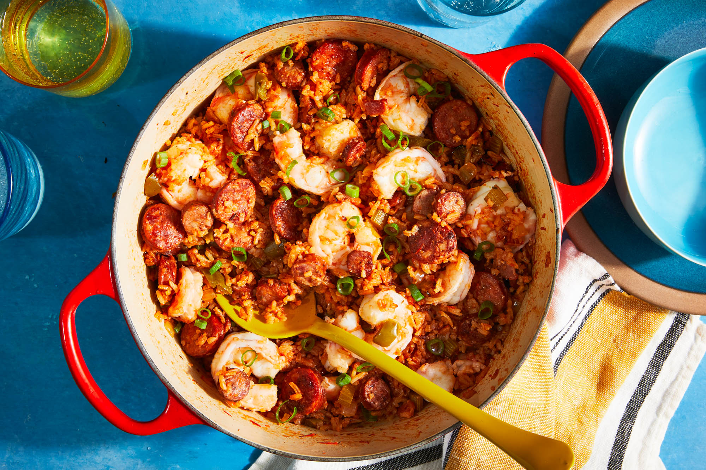

Jambalaya

Description
the perfect bowl of spicy cajun food
Ingredients
- celery
- onion
- green bell pepper
- jalepeno
- cayenne
- garlic
- cajun/creole seasoning
- bay leaf
- thyme
- protien(s) of choice (chicken, shrimp, andouille sausage, etc.)
- chicken stock
- crushed tomatoes
- white rice
- okra
- salt
- black pepper
Steps
- saute the chicken and sausage
- saute the veggies (onion, bell pepper, celery, jalepeno, garlic)
- add rice, liquid, and seasonings
- cover and cook for 25-30 min, stirring ~ every 5 min
- add the okra, shrimp, chicken, sausage
- cook for 5 more min
- season to taste
- serve warm